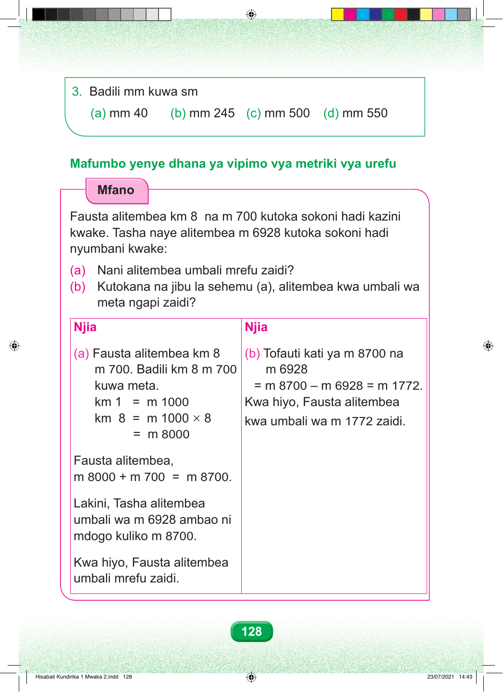

3. Badili mm kuwa sm (a) mm 40 (b) mm 245 (c) mm 500 (d) mm 550 Mafumbo yenye dhana ya vipimo vya metriki vya urefu Mfano Fausta alitembea km 8 na m 700 kutoka sokoni hadi kazini kwake. Tasha naye alitembea m 6928 kutoka sokoni hadi nyumbani kwake: (a) Nani alitembea umbali mrefu zaidi? (b) Kutokana na jibu la sehemu (a), alitembea kwa umbali wa meta ngapi zaidi? Njia Njia (a) Fausta alitembea km 8 (b) Tofauti kati ya m 8700 na m 700. Badili km 8 m 700 m 6928 kuwa meta. = m 8700 – m 6928 = m 1772. km 1 = m 1000 Kwa hiyo, Fausta alitembea km 8 = m 1000 × 8 kwa umbali wa m 1772 zaidi. = m 8000 Fausta alitembea, m 8000 + m 700 = m 8700. Lakini, Tasha alitembea umbali wa m 6928 ambao ni mdogo kuliko m 8700. Kwa hiyo, Fausta alitembea umbali mrefu zaidi. 128 Hisabati Kundirika 1 Mwaka 2.indd 128 23/07/2021 14:43